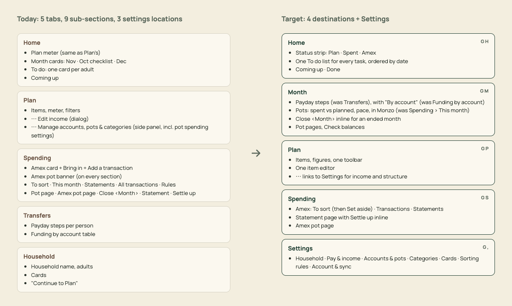
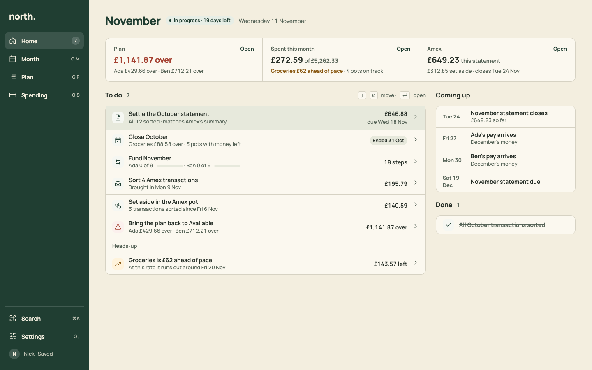
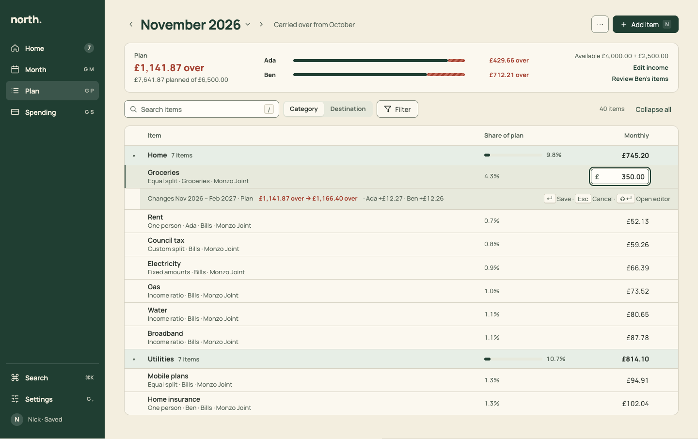
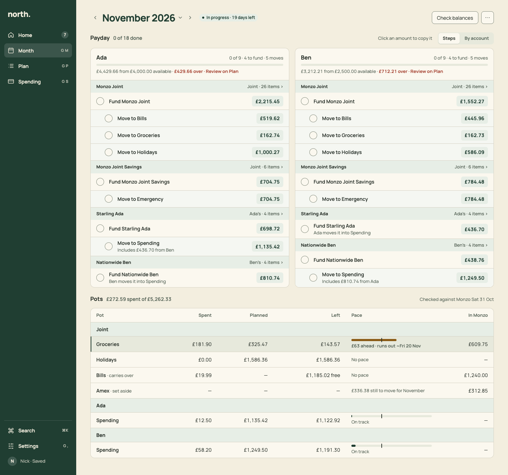
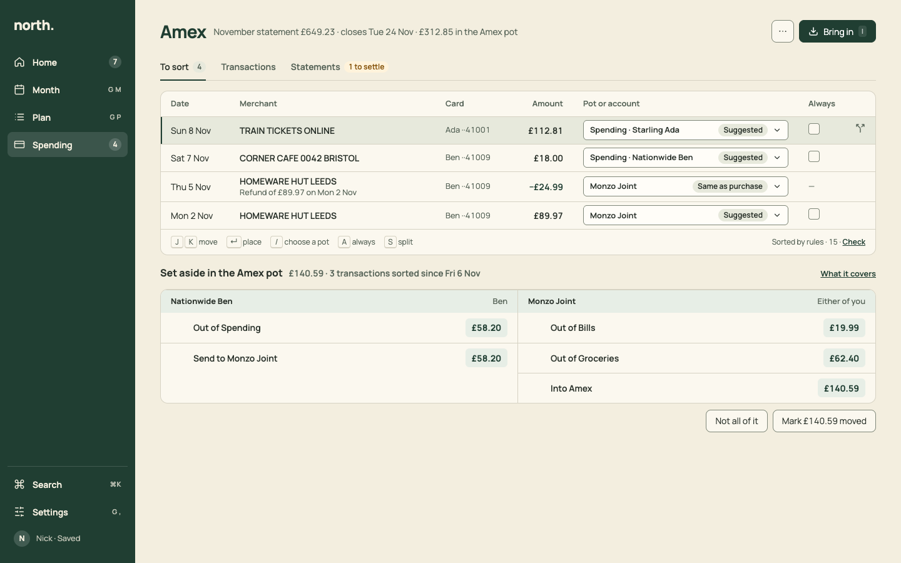
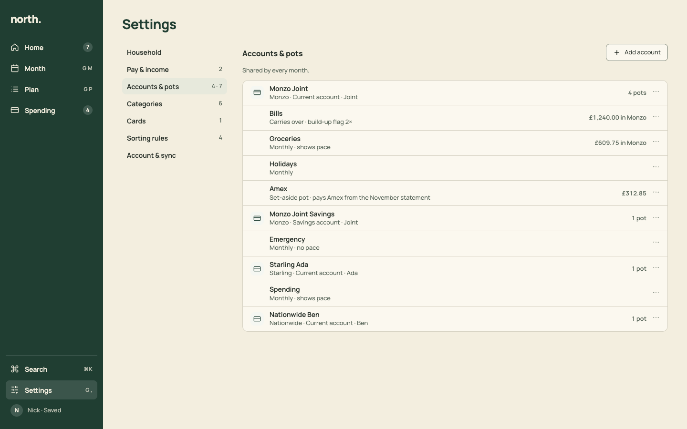
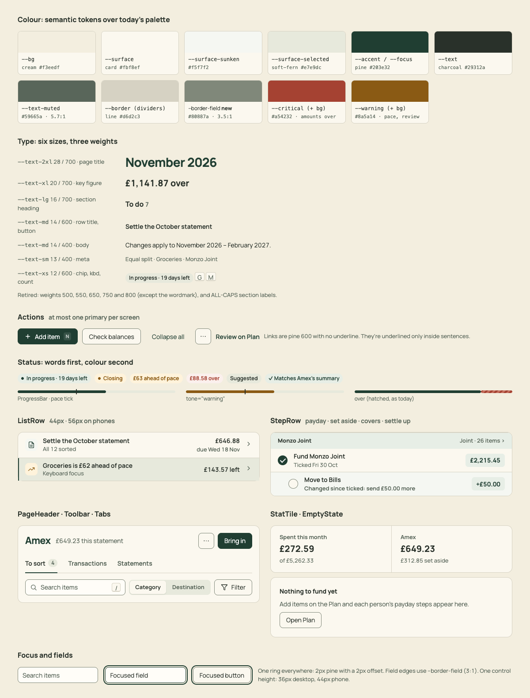

Before/after for the navigation and the four job flows. Each page puts today's screenshot (seed data, 11 Nov 2026) next to an HTML mockup of the target. The PNG exports in png/ are what the PR briefs embed. Open these files straight from disk: they need no server, just the Manrope web font. Add ?capture to a URL to see the artboards at full size.
Read alongside review.md (findings) and plan.md (target design and PR sequence).

1 · Navigation and structure5 tabs → Home · Month · Plan · Spending, plus Settings
2 · Home (job 4: quick check-in)Status strip and one To do list
3 · Plan (job 1: plan the month)Compact figures, one toolbar, inline edit, one editor
4 · Month (job 2: track and tick off)Payday steps, pots and close on one screen
5 · Spending (job 3: settle the Amex)To sort → Set aside → Statement with Settle up
6 · SettingsHousehold, income, accounts & pots, categories, cards, rules
7 · Design systemTokens, type, actions, status, rows, steps, focus